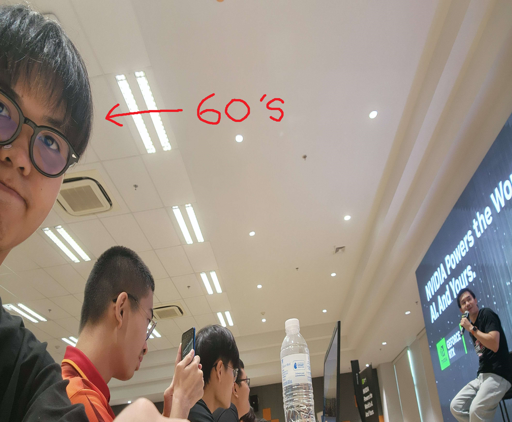
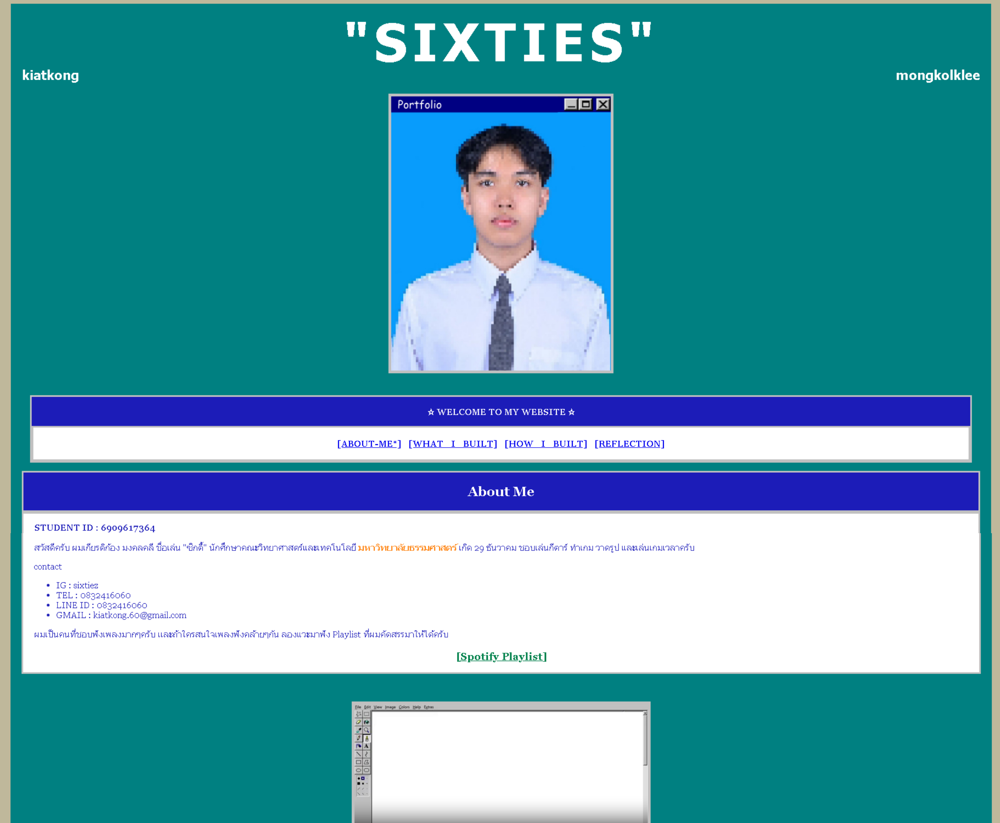
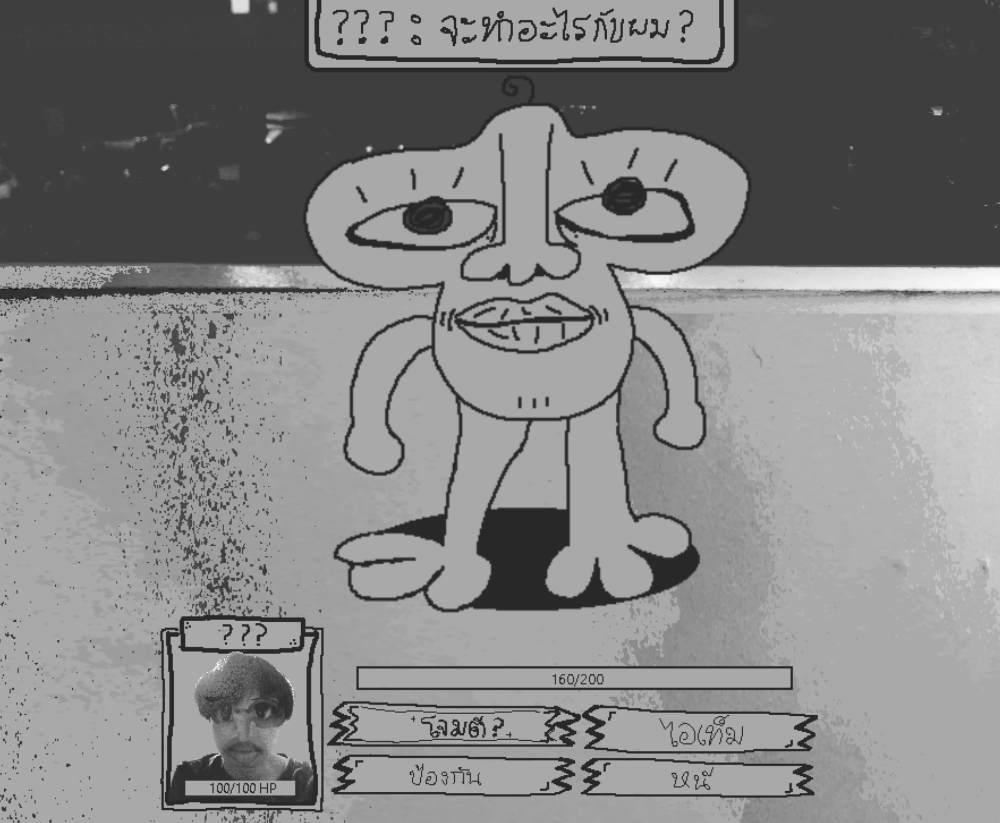

"SIXTIES"
kiatkong mongkolklee

☆ WELCOME TO MY WEBSITE ☆
About Me
STUDENT ID : 6909617364
สวัสดีครับ ผมเกียรติก้อง มงคลคลี ชื่อเล่น "ซิกตี้" นักศึกษาคณะวิทยาศาสตร์และเทคโนโลยี มหาวิทยาลัยธรรมศาสตร์ เกิด 29 ธันวาคม ชอบเล่นกีตาร์ ทำเกม วาดรูป และเล่นเกมเวลาครับ
contact
- IG : sixtiez
- TEL : 0832416060
- LINE ID : 0832416060
- GMAIL : kiatkong.60@gmail.com
สามารถติดตามผลงานเพิ่มเติมได้ที่ git hub ตามลิงก์ด้านล่างได้เลยครับ
C:/Users/CSIOO/PROJECT01
AORUS AI Experience Campus Roadshow
type : Activity
Date : 4 ก.ย 2569
Role : Student Description : กิจกรรมสอนใช้ AI
Skill : Understanding How to use AI , What skill needed for future
Reflection : เป็นกิจกรรมสอนให้ผมได้โหลดเเละใช้ ai เเต่ะเเบบเเละโชว์ว่าเราสามารถใช้ Ai เเบบ offline ได้ เเละมีพี่เปาบอกเเนวทางการประกอบอาชีพในสายคอมพิวเตอร์ ทำให้ผมรู้ข้อบกพร่องขอตัวเองเเละนำไปปรับใช้กับอนาคตว่าควรวางเเผนยังไง
Evidence
"รูปผมในงาน AORUS AI Experience Campus Roadshow"

C:/Users/CSIOO/PROJECT02
Project A1
type : Course Project Date : 30 ก.ย 2569
Role : Developer Description : Project Portfolio A1
Skill : HTML,CSS,RESPONSIVE WEB DESIGN
Reflection : ผมได้ทำ website ที่ใช้ html เเละ css ทำให้ผมได้เรียนรู้วิธีใช้ html เเละ css ทั้งวิธีจัดเเละการใช้ div ที่ถูกต้อง โดยปัญหาที่พบเจอคือการไม่เเน่ใจว่าใช้ css ตบเเต่งยังไงให้ตรงตามที่เราคาดหวัง ซึ่ผมได้เเก้ปัญหาโดยการค้นหาเเะถาม AI เพื่อให้เเนะนำว่าควรใช้ code css เเบบใดเพื่อให้ตรงตามที่ต้องการ หากได้พัฒนางานนี้ต่อจะเพิ่ม java script เพื่อให้เว็ปมีความสวยงามมากกว่านี้
Evidence
"รูปตัวอย่าง website A1"

C:/Users/CSIOO/PROJECT03
Project Midnight
type : Other / Game Project
Date : 20 ก.ย 2569 Role : Developer , Art Dicrecter
Description : เกม rpg Skill : Ruby,Simple Coding,Art Design
Reflection : ผมได้ทำ Project midnight เป้นเกม rpg เล็กๆ โดยระหว่างการทำงานผมก็ได้เรียนรู้ภาษา ruby เเละได้ออกเเบบตัวละครด้านต่างๆ ปัญหาที่ผมเจอเป็นการไม่เข้าภาษา ruby ทั้งหมดทำให้การทำงานช้าลงเเต่วิธีการเเก้ปัญหาของผมคือการค่อยๆเรียนรู้เเละค้นหาข้อมุลผ่าน internet ทำให้เข้ามากขึ้น เเะถ้าสามารถพัฒนาต่อได้คงอยากทำ project นี้ให้เสร็จเเละเข้าใจภาษา ruby ไปในตัวครับ
Evidence
"รูปตัวอย่าง demo จากเกมราตรี"
